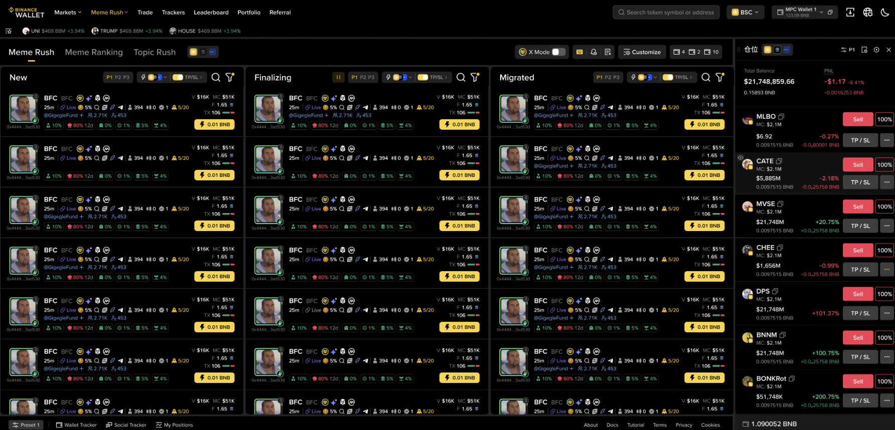
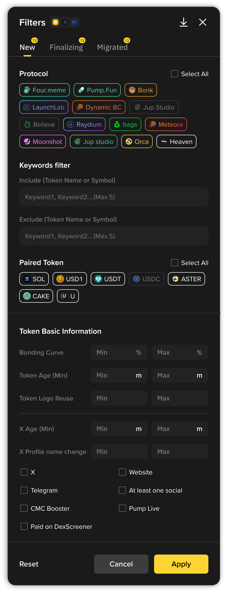
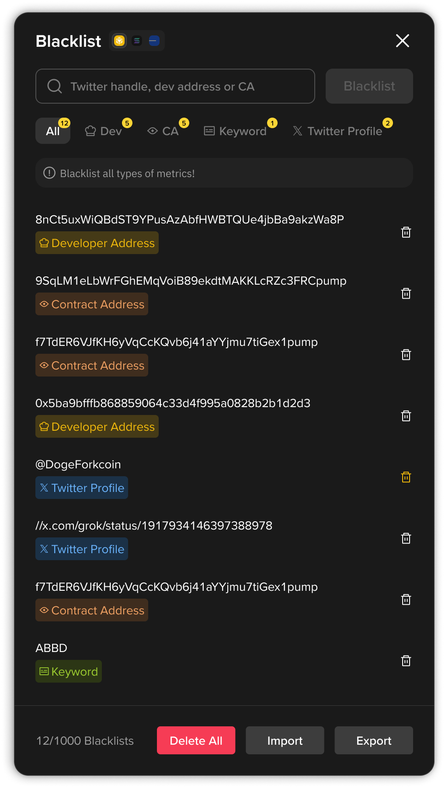
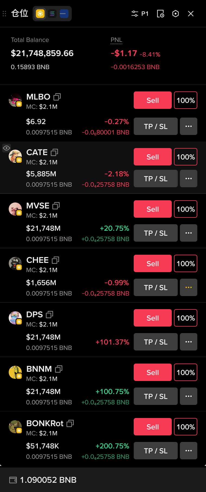

Fusion 多链模式交互方案 Demo。用于对比 方案 A（单选切换） 和 方案 B（多选组合） 两种链选择器入口组件。

| 交互 | 选一条链，或选 "BSC/SOL/BASE" 全链模式 |
| 选中态 | ✓ 标记当前选中（单选互斥） |
| 列表 | 单链 → 该链；全链 → 三链混排 |
| QuickBuy | 单链 1 行 / 全链 3 行（per-chain） |
✓ 简单直觉，和当前切换体验一致
✓ 无"选了 2 条链"的边界 case
✗ 无法灵活组合（如仅 BSC+SOL）
| 交互 | Checkbox 勾选任意链组合（1/2/3 条） |
| 选中态 | ☑ 多选，至少保留 1 条 |
| 列表 | 勾选哪些链就显示哪些链 token |
| QuickBuy | 按勾选链数量展开 input |
✓ 灵活度最高，任意 2 链组合
✓ 触发器直接展示已选链 icon
✗ 概念更复杂，需理解多选
✗ 2 链混排排序逻辑需额外定义
开启多链模式后，以下位置的链选择器全部同步切换，任意入口切换即时生效。
所有弹窗顶部增加 chain tab（BSC → SOL → Base），按链独立保存设置。


